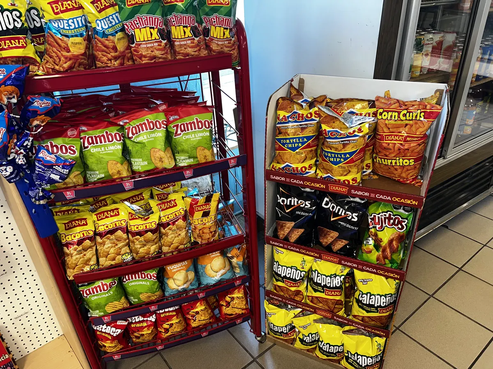

Artículos
Descubre nuestros productos
Más de 30 años importando los mejores productos de El Salvador y Centroamérica. Desde alimentos tradicionales hasta ropa y artículos nostálgicos.

Artículos
Más de 30 años importando los mejores productos de El Salvador y Centroamérica. Desde alimentos tradicionales hasta ropa y artículos nostálgicos.
